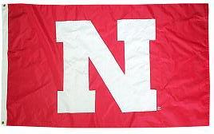
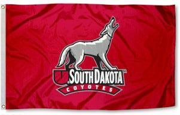

- ILLINOIS
- Tom Miler - 2012 Illinois Senior Champion
- Derek Meinhart - 2012 Illinois Amateur Runner Up
- Dave Ryan - 2012 Illinois Player of the Year
- Todd Mitchell - 2010 USGA Mid Am Runner Up
- Mike Cushing - 2012 Bloomington Normal GA POY
- Tom Kearfott - Bloomington Normal GA Hall of Fame
- John Ehrgott - 2007 & 2009 Illinois Mid Am Champion
- John Finnin - 1997 Illinois Publinks Champion
- Tim Sheppard - 2012 USGA Mid Am
- IOWA
- Jon Olson - 2012 Iowa Amateur Champion
- Dennis Bull - 2012 Iowa Player of the Year
- Josh Black - 2012 Iowa Amateur Runner Up
- Jim Curell- 2011 Iowa Senior Player of the Year
- Justin Schulte - 2007 Iowa Mid Am Champion
- Ty Stewart - 2008 Iowa Bestball Champion
- Pending Invitations
- Mike McCoy - Iowa Golf Hall of Fame
- JD Anderson - 2009 Iowa 4 Ball Champion
- Jon Brown - 2008 Iowa Mid Amateur Champion
- KANSAS
- Steve Newman - 2012 Kansas Senior Champion
- Aaron Sheaks - 2012 Kansas Mid-Amateur Champion
- Michael Holloway - 2012 Kansas Publinks Champion
- Grant Vollertsen - 2012 Kansas High Plains Amateur Champion
- Tyler Chapman - 2011 Kansas Mid Amateur Team Champion
- Kevin Handlan - 2006 Kansas Senior Amateur Champion
- Tracy Chamberlain - 2011 Kansas Mid Am Player of the Year
- Sean Thayer - 5 time Kansas High Plains Amateur Champion
- MINNESOTA
- Andy Jacobsen - 2012 Minn Match Play Champion
- Leif Carlson - 2012 MGA Senior Player of the Year
- Jesse Larson - 2012 MN Mid Am Match Play R-Up
- Greg Murphy - 2012 MPGA Bestball Runnerup
- Steve Hjortness - 2012 Slumberland Sr Am Champion 50-59 Div
- Scott Thomas - 2012 MGA Players Championship Quarterfinalist
- Erik Christopherson - 2011 MGA State Mid-Match Play Champion
- Jesse Bull - 2011 & 2012 USGA Mid Amateur
- Jordan Hawkinson - 2010 USGA Mid Amateur

- NEBRASKA
- Rick Dusek - 2012 Midwest Cup Runner Up
- Dave Shillinglaw - 2008 USGA Mid Amateur
- Mike Krumland - 2011 NGA Senior Match Play Champion
- Pending Invitations
- Patrick Duffy - 2012 NGA Mid Amateur Champion
- John Sajevic - 2008 NGA Senior Champion
- Nietfeldt Ryan - 2012 Midwest Cup Runner Up
- David Easley - 2012 NGA Four Ball Champion
- Scott Tridle - 2010 Nebraska Cup Team
- Travis Minzel - 2011 NGA Mid Amateur Champion

- SOUTH DAKOTA
- Brandon Sigmund - 2012 SDGA Amateur Champion
- Chris Long - 2011 SDGA Mid Amateur Champion
- Ben Irlbeck - 2012 SDGA Match Play Champion
- Tyler Rachetto - 2011 SDGA Match Play Champion
- Jeff Salter - 2010 SDGA Mid Amateur Champion
- Ryan Jansa - 8 Time SDGA Amateur Champion
- Jeff Meyerink - 4 Time Mitchell City Champion
- Mike Brummer - SDGA Golf Hall of Fame
- Paul Schock - SDGA Golf Hall of Fame

- MISSOURI
- Antonio Serrano - 1999 & 2005 MGA Mid Amateur 2nd Place (tie)
- Wayne Fredrick - 2007 MGA Mid Amateur Champion
- Steve Groom - 2012 KCGA Player of the Year
- Brad Nurski - 2012 MGA Stroke Play Champion
- Brian Haskell - 2011 MGA Stroke Play Champion
- Harry Roberts - 2011 MGA Mid Amateur Champion
- Scott Hovis - Five Time Dawson Memorial Champion
- Tyler Stalker - 2007 MGA Four Ball Champion
- Patrick Britt - 2010 & 2012 MGA Mid Amateur - 3rd Place
- WISCONSIN
- Mike Murphy - 2011 Badgerland Invitation Senior Champion
- Dan Anderson - 2010 WSGA Governor's Cup Champion
- Rob Peters - 2011 Madison Mid Amateur Champion
- Eric Busalacchi
- Steve Johnson - 2010 WSGA Senior Player of the Year